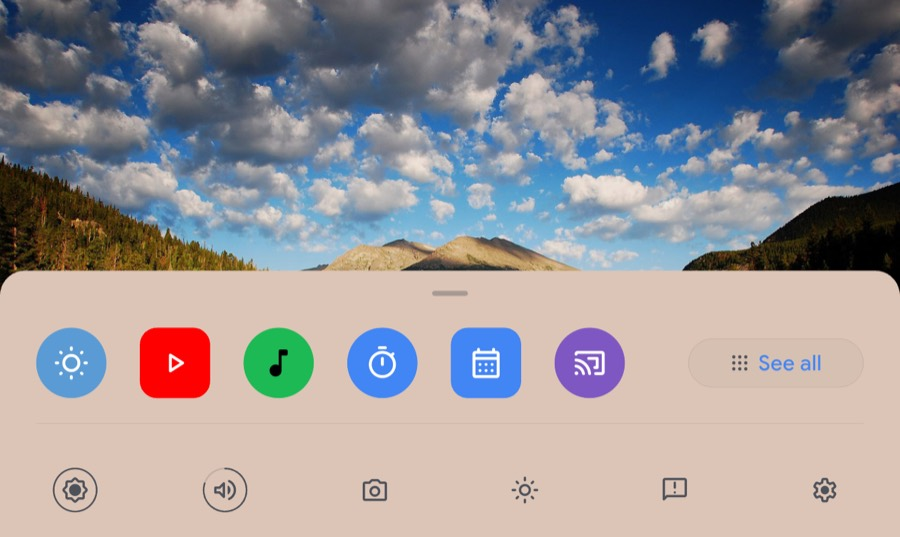

◷
Easy to read at a glance
A large clock over a photo background gives the tablet a clear, calm look that works well on a counter or wall.
Put the apps your team uses — POS, menu, music, or loyalty — on one simple screen. SKLauncher gives you a clear clock, a calm photo background, and an easy app grid, so the tablet feels ready for the counter.
Runs on Android tablets, including older low-RAM devices (1–4 GB target). The contact button is a placeholder — replace hello@example.com with your real address.

SKLauncher is a simple home screen for wall or counter tablets. It keeps the essentials visible and makes your key apps easy to open.
A large clock over a photo background gives the tablet a clear, calm look that works well on a counter or wall.
Put your POS, menu, music, or loyalty apps in a simple grid so staff can get to them quickly.
SN-Launcher is built with low-RAM Android tablets in mind, so you can make better use of hardware you already have.
These are real screenshots from the SN-Launcher project. Café-specific setup photos can be added later.


Use it as a counter screen, a simple menu tablet, a kitchen display companion, or a calm music/ambient display. Start with the setup that fits your café.
SKLauncher is included in SN-Launcher. Install SN-Launcher on your Android tablet, then open the SimpleKioskLauncher page.
Get the latest release from GitHub. Most modern tablets use the arm64-v8a APK.
Install the APK on Android and set SN-Launcher as the home app. You can test it on a spare tablet first.
SKLauncher is the SimpleKioskLauncher page in the ef build of SN-Launcher. It gives you the clock, photo background, and app grid.
Straight answers about what SKLauncher is and how to use it.
SKLauncher (SimpleKioskLauncher) is a simple launcher page in SN-Launcher. It shows a photo background, a large clock, and a grid of your installed apps.
Yes. This site/repo is licensed under Apache 2.0, which allows commercial use. Check the main SN-Launcher project for its specific license and asset attributions.
SKLauncher is part of SN-Launcher, which targets Android tablets, including older low-RAM devices. For the best result, test on your tablet before putting it on the counter.
No. SKLauncher is the home screen that makes your tablet simple to use. You still run your own POS, menu, music, or loyalty apps on the tablet.
Use the contact button on this page. Right now it points to hello@example.com as a placeholder — replace it with your real contact address before sharing the site widely.
The site repo is Giathinh1234/SimpleAppLauncher. The SN-Launcher app source is at SimpleAppLauncher/SN-Launcher.